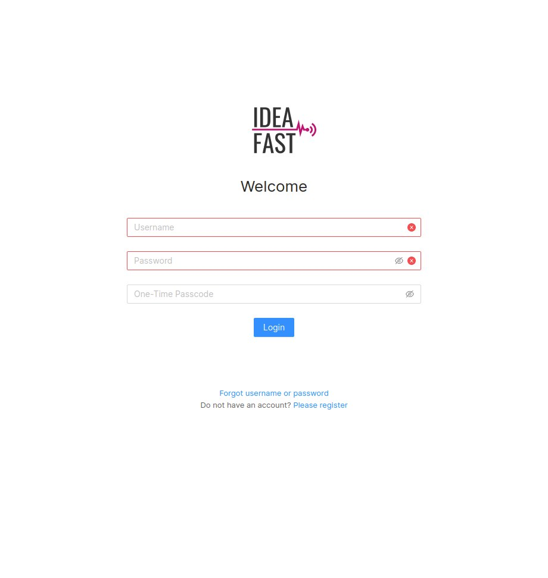
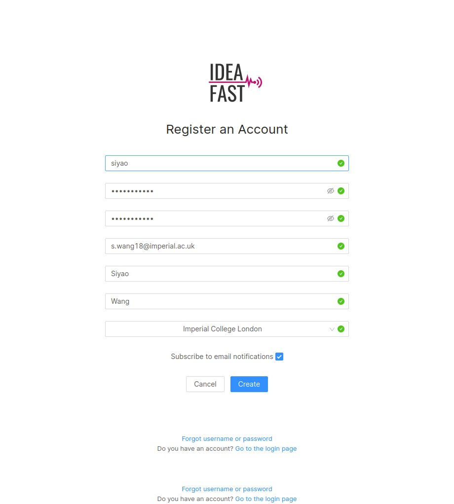
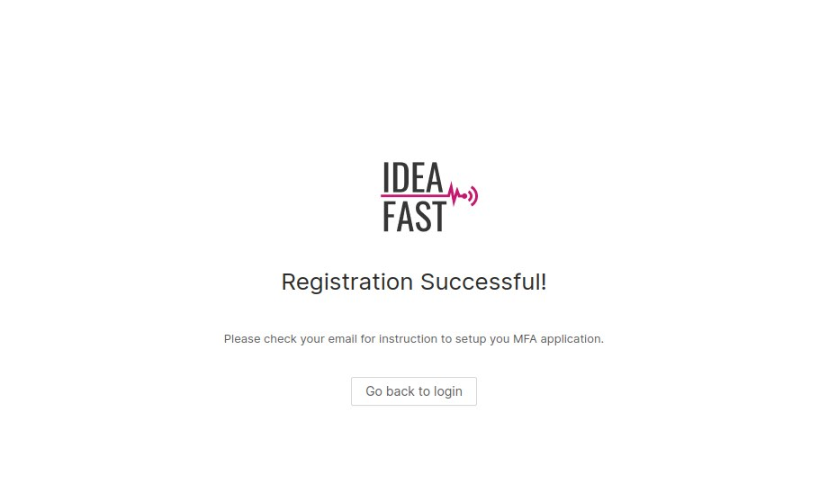
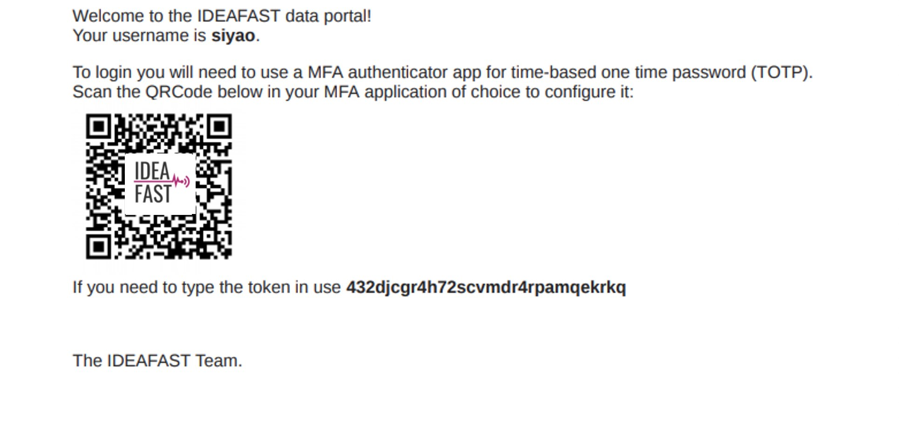
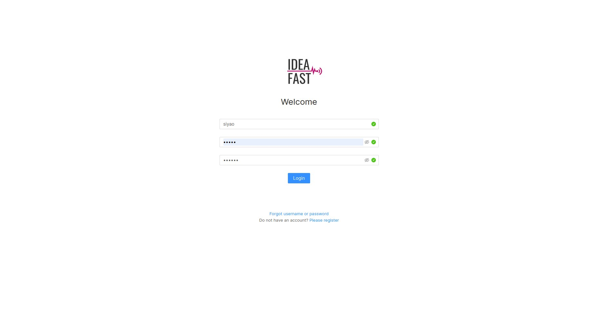
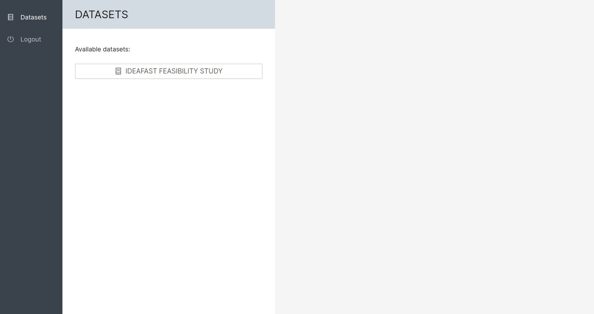
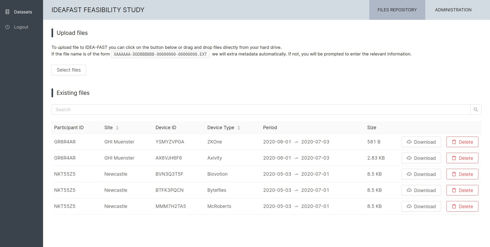
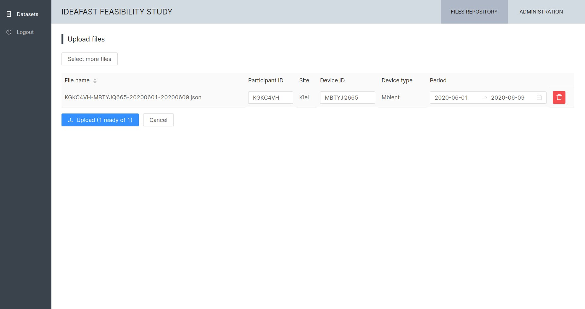
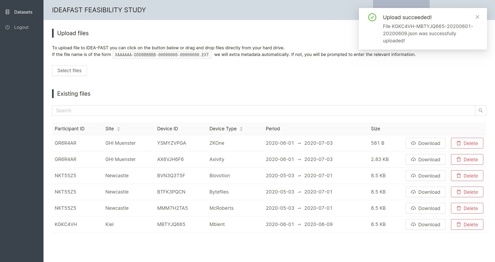

Data Management Platform (data.ideafast.eu)
Guide to User Registration and Data Upload
This document provides guidelines for a user to:
- Register an account to access the IDEA-FAST data management platform;
- Upload/download data to/from the IDEA-FAST feasibility study dataset.
Register a new account
Step 1: Go to https://data.ideafast.eu/. Click “Please register” on the Welcome page:

Step 2: Fill in your registration information:

Click “Create” and you will see the following page if the registration is successful:

Step 3: Check your email and get your time-based one-time password (TOTP).
You will receive the following email from no-reply@ideafast.eu:

Access the platform
Step 1: Go to https://data.ideafast.eu/. Enter your username and password.

Step 2: You will need a time-based one-time password (TOTP) to access the data management platform. To get your TOTP, please scan the QR code (or enter the token) provided in the registration email using an Authentication Application (e.g., Google Authentication App or Microsoft Authenticator App) via your smartphone.
Instructions of how to get your TOTP via Google Authentication App:
Step 2.1: Install the App on your smartphone and open the App.
Step 2.2: Choose “Scan barcode” and scan the QR code provided in the email. Or you can choose “Manual entry” and enter the token.
Step 2.3: A 6-digit TOTP will be generated by the App.
Step 3: Enter the 6-digit TOTP in the “One-Time Passcode” field on the Welcome Page and then click “Login”.
Access the IDEA-FAST Feasibility Study Dataset
User accounts will be reviewed by the Admin team of the IDEA-FAST Data Management Platform. Your permission to access the Feasibility Study Dataset will be assigned by the Admin team.
Step 1: After login you will see the Datasets page. Click the “IDEA-FAST FEASIBILITY STUDY” dataset. You will then see a list of existing files under this dataset.

Please contact idea-fast@imperial.ac.uk if you have any problems on accessing the dataset.

Upload Data to the IDEA-FAST Feasibility Study Dataset
Step 1: On the IDEA-FAST FEASIBILITY STUDY dataset page, click “Select files” under “Upload files” section.
Step 2: Choose the data files from your local machine and click “OK”. If the name of a file is in the following form, the platform will extract metadata automatically:
XAAAAAA-DDDBBBBBB-SSSSSSSS-EEEEEEEE.EXT
where “XAAAAAA” is the IDEA-FAST FS participant ID, “DDDBBBBBBBB” is the IDEA-FAST Device ID, “SSSSSSSS” is the record start date, and “EEEEEEEE” is the record end date. For example:
IAAAAAA-MMM3PQCN-20200702-20200703.ZIP

The platform will automatedly check the file name and extract the Participant ID, Site, Device ID, Device Type and Recording Period information. If the filename is not in the standard format, you will need to enter the valid Participant ID, Device ID and Recording Period before uploading the data.
Step 3: Click the “Upload (N ready of M)” to upload the file to the platform. A pop-up notification of “Upload successful” will appear at the top-right corner if the upload is successful.

Download Data from the IDEA-FAST Feasibility Study Dataset
Step 1: Go to https://data.ideafast.eu/ and login.
Step 2: Click the “IDEA-FAST FEASIBILITY STUDY” dataset. You will then see a list of existing files under this dataset.
Step 3: Click “Download” to start the download process.